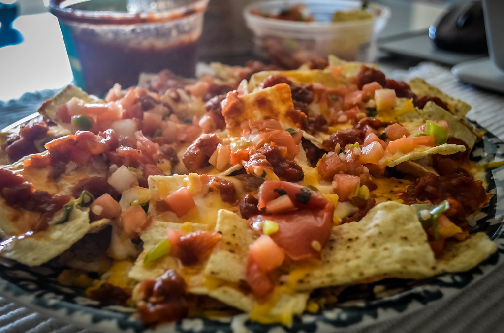

Nachos

Description
These chicken nachos are easy to prepare, delicious, and sure to be a
big hit!
Ingredients
- 3 tablespoons canola oil
- 6 green onions, sliced, white parts and tops separated
- 2 gloves garlic, crushed
- 1 shredded, cooked, whole chicken breast
- Salt and pepper to taste
- 1 cup salsa
- 12 ounces tortilla chips
- 8 ounces shredded Cheddar/Monterrey Jack cheese blend
- ½ large tomato, sliced
Directions
- Gather all ingredients. Preheat the oven to 350 degrees F
(175 degrees C).
- Heat oil in a deep 12-inch skillet over medium heat. Add white
parts of the green onions and garlic; cook and stir until onions
are just tender.
- Mix in shredded chicken and season to taste with salt and pepper;
toss until well coated. Stir in salsa.
- Arrange tortilla chips on a large baking sheet. Spoon chicken
mixture over tortilla chips; top with shredded cheese and tomato.
- Bake in the preheated oven until cheese has melted, about 10 minutes.
Remove from heat and sprinkle with green onion tops before serving.
Home